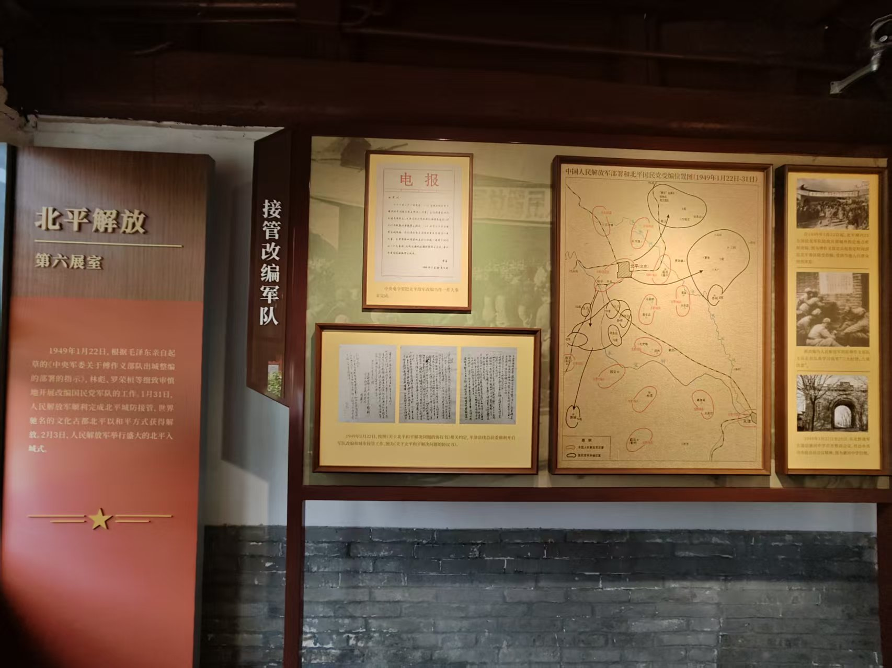
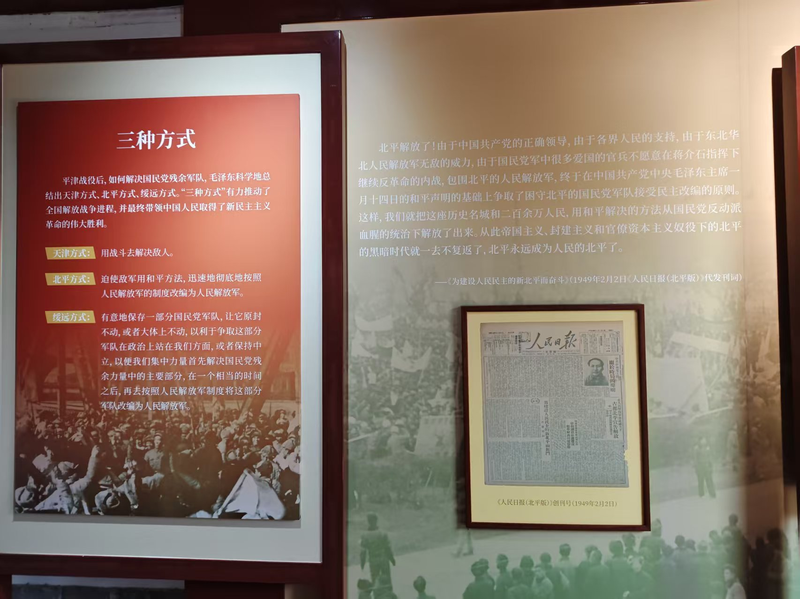
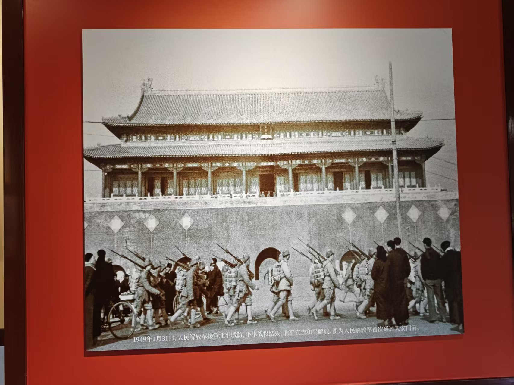
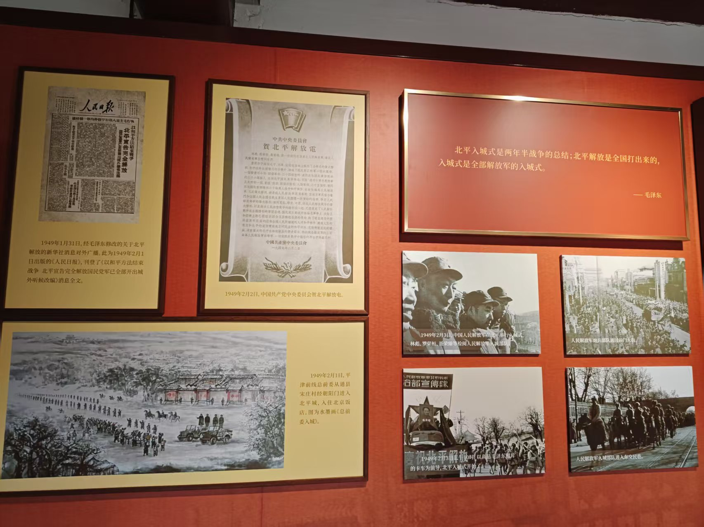
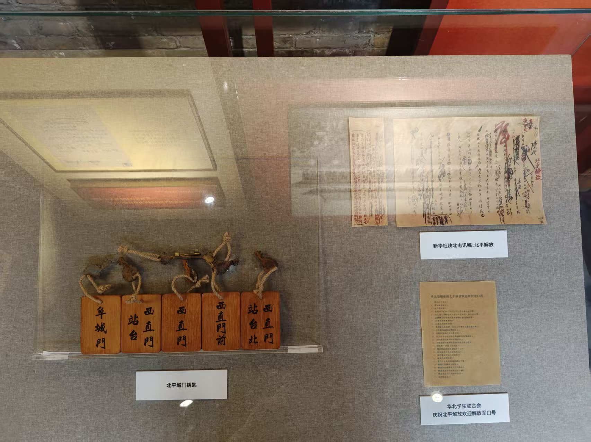
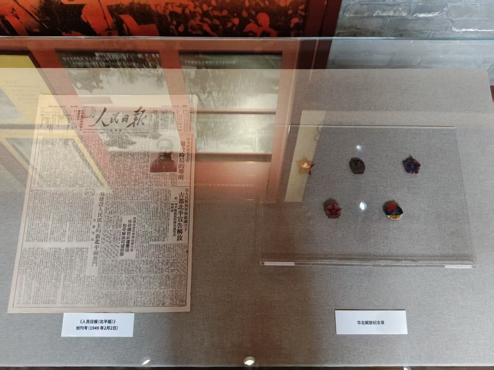
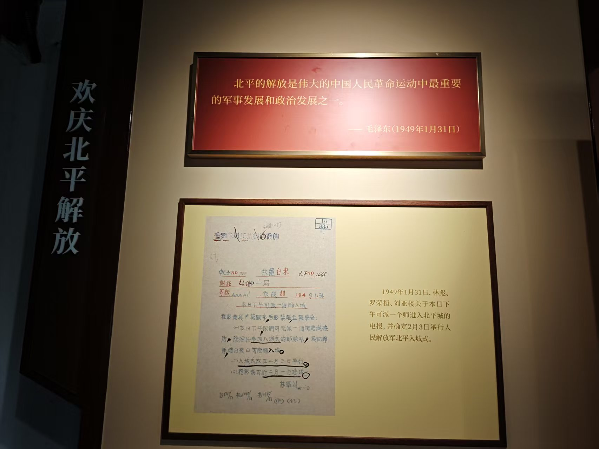
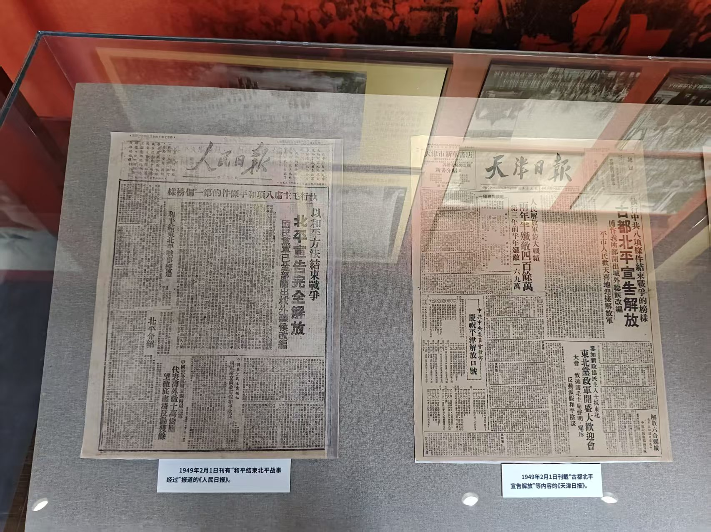
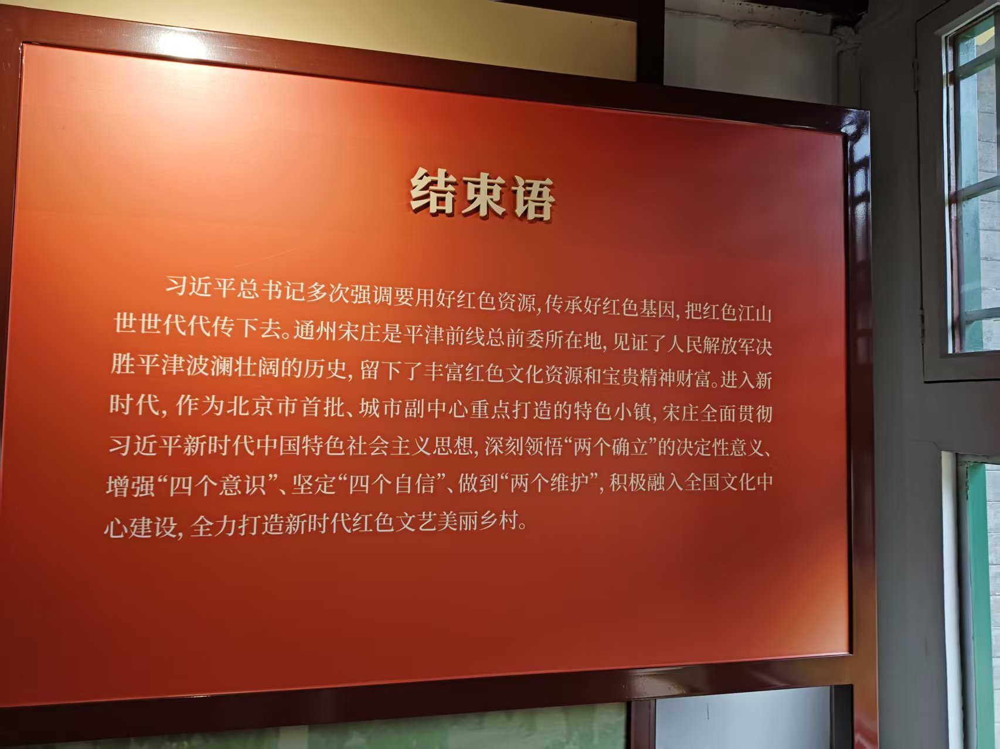

展区 6：北平解放
欢迎来到第六展区，北平解放。

展板左侧为“北平解放”主题介绍，右侧陈列《中央军委关于傅作义部队出城整编的指示》电报原件、1949年1月22日至31日的《中国人民解放军部署和北平国民党受编位置图》，以及多张历史照片，包括解放军入城、群众欢迎等场景，真实还原了和平接管的组织过程。

展板左侧为“北平解放”主题介绍，右侧陈列《中央军委关于傅作义部队出城整编的指示》电报原件、1949年1月22日至31日的《中国人民解放军部署和北平国民党受编位置图》，以及多张历史照片，包括解放军入城、群众欢迎等场景，真实还原了和平接管的组织过程。

大幅黑白照片记录1949年1月31日人民解放军首次从天安门前经过的历史瞬间，背景为雄伟的天安门城楼，前景为列队行进的士兵与围观群众，标志着北平正式宣告和平解放。

展板陈列1949年2月2日《中共中央委员会贺北平解放电》原件、《人民日报》报道“以和平方法结束战争”消息的版面，以及毛泽东关于“北平入城式是两年半战争的总结”的重要论述，凸显政治意义。

玻璃展柜内陈列傅作义部移交的“阜成门”“西直门”“站台”等木质城门钥匙，以及新华社陕北电讯稿《北平解放》和华北学生联合会庆祝口号手稿，象征权力交接与民众欢庆。

展柜左侧为1949年2月2日《人民日报（北平版）》创刊号，右侧陈列数枚“华北解放纪念章”，包括红星、齿轮、麦穗等设计元素，体现胜利纪念与时代精神。

展板上方引用毛泽东1949年1月31日评价：“北平的解放是伟大的中国人民革命运动中最重要的军事发展和政治发展之一。”下方陈列林彪、罗荣桓、刘亚楼关于派师入城的电报手稿，记录入城决策细节。

展柜并列陈列1949年2月1日《人民日报》“以和平方法结束战争”报道与《天津日报》“古都北平宣告解放”报道，展现两地媒体对同一历史事件的不同视角与共同欢庆。

红色展板以习近平总书记讲话收尾，强调通州宋庄作为平津前线总前委所在地，见证了波澜壮阔的历史，新时代应传承红色基因，打造红色文艺美丽乡村，赋予旧址当代价值。